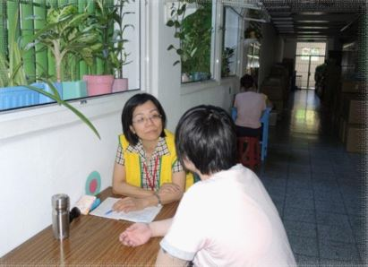
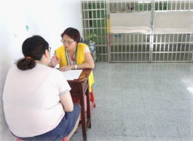

課程活動 course activity
一、團隊信念
服務精神與信念：
高雄市正信佛教青年會觀音線協談團隊志工們每週不畏風雨與辛苦，從不懈怠
蒞臨本監從事收容人輔導工作，歷年不斷增加志工人數，鼓勵更多的受刑人，
給予其欠缺與渴望的情感支持，並提供各項諮詢與生活資訊，豐富與充實其獄中生活，讓受刑人身、心、靈的需求皆的以滿足，具教誨成效
，望受刑人受益。
對於本監的付出和貢獻：
團隊秉持輔導之專長，並以認真的態度豐富本監之教誨內容。在個別輔導忠，總能以志工們豐富的人生歷練與智慧給予受刑人各項生活與心理上的指引，
並且衝分地給予受刑人關懷與鼓勵，因此，每一位接受過志工們輔導的受刑人對於他們的付出，總是充滿感激。
二、具體事蹟
(一) 延續性：
自民國98年5月高雄市正信佛教青年會觀音線協談即加入本監教誨工作行列，服務至今已逾5年。目前於本監服務之社會志工13名，各個志工莫不發揮專長，
運用熱情和智慧教化收容人，配合本監安排個別輔導，針對個案所需給予支持和關懷，且也引導其能較為正向思考人生未來的人生，建立收容人回歸社會之基石與動人，成效堪稱卓著。
(二) 服務績效：
自民國98年5月蒞監服務至103年6月止，每2周1次，每次服務約16~20人次，累計教誨逾2千人次，服務時數總計逾2千小時。


很怕自己不小心又掉進陷阱中、、、害怕有一天我的努力、、因為我的脾氣、、、破功、、、
感謝上天能讓我遇到了妳─在我生命中妳就像是、、、
每次晤談，妳總是能把我緊閉的心靈緩緩開啟、、、
用不同的角度去接待人、事、物、、、
服務電話 servive line
洽談專線：224-7178 行政專線：224-8948